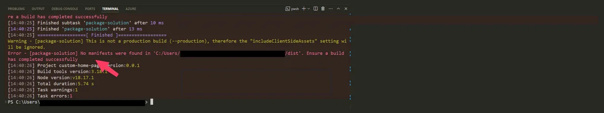

Make Cursor read the logs it cannot watch
Originally posted on LinkedIn, September 8, 2025.
Cursor and other coding agents cannot see CLI output the way we do. Errors may appear directly on the screen or hide inside long lines of logs, but an agent cannot listen to those logs in real time, follow Tail, or automatically react to Watch Mode. If it made that kind of call, it would get stuck waiting for the process to finish.
That leaves a gap when an agent runs code for us. How do we make sure an automated run has not broken something? The answer is not MCP for the CLI.
My solution is simple. I changed my npm command to write its logs to a file. In my case, they go into a logs/ directory because the project has more than one environment, and that directory is listed in gitignore. I used the Tee command, which is similar to the better-known Tail, to write the logs.
I also added a Cursor Rule telling the agent to check these files after writing code or while debugging. At the end of each run, it now checks them for exceptions, warnings, or errors that otherwise slipped under the radar.
No complicated MCP setup and no external tools. Just logs written to a file. Sometimes one log file can tell you what a coding agent cannot see.
